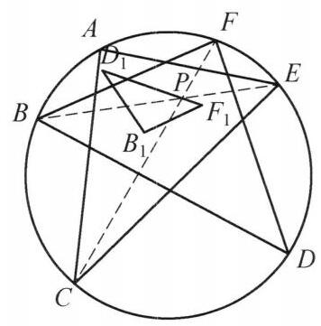

24 例 7：六边形相交弦比例与相似三角形
24.1 题目
圆内接六边形 {ABCDEF} 满足: {AB} \cdot {CD} \cdot {EF} = {BC} \cdot {DE} \cdot {AF} . 设点 B 关于直线 {AC} 的对称点为 {B}_1 ，点 D 关于直线 {CE} 的对称点为 {D}_1 ，点 F 关于直线 {EA} 的对称点为 {F}_1 . 证明 \triangle {B}_1{D}_1{F}_1 \backsim \triangle {BDF} .

图 3-6
24.2 参考解答
如图 3-6, 由题设条件及正弦定理, 知
\frac{\sin \angle {ACF}}{\sin \angle {ECF}} \cdot \frac{\sin \angle {BEC}}{\sin \angle {BEA}} \cdot \frac{\sin \angle {EAD}}{\sin \angle {CAD}}
= \frac{AF}{EF} \cdot \frac{BC}{AB} \cdot \frac{DE}{CD} = 1.
所以,由角元塞瓦定理,得 {CF},{BE},{AD} 交于一点 P .
因为
\angle {PC}{D}_1 = \angle {D}_1{CE} - \angle {PCE}
= \angle {ECD} - \angle {FCE}
= \angle {EAD} - \angle {FAE}
= \angle {EAD} - \angle {F}_1{AE}
= \angle {F}_{1}{AP}\text{ . }
又
\frac{{D}_{1}C}{CP} = \frac{DC}{CP} = \frac{FA}{AP} = \frac{{F}_{1}A}{AP},
所以, \triangle {D}_1{PC} \backsim \triangle {F}_1{PA} ,故 \frac{{D}_{1}P}{{F}_{1}P} = \frac{PC}{AP} ,结合 \angle {APC} = \angle {FPD} = \angle {F}_{1}P{D}_1 ,知 \triangle {D}_{1}P{F}_1 \backsim \triangle {CPA} ,而 \triangle {CPA} \backsim \triangle {DPF} ,故 \triangle {D}_{1}P{F}_1 \backsim \triangle {DPF} .
同理可得 \triangle {B}_{1}P{F}_1 \backsim \triangle {BPF},\triangle {B}_{1}P{D}_1 \backsim \triangle {BPD} .
所以 \triangle {B}_1{D}_1{F}_1 \backsim \triangle {BDF} . 原问题得证.
注: {AB} \cdot {CD} \cdot {EF} = {BC} \cdot {DE} \cdot {AF} 等价于 {AD},{BE},{CF} 三线共点是常用转换,得到 P 点后在图中导出相似即可得到结论.
24.3 解题思路与分析
这份解答之所以让人觉得“费解”，是因为它采用了教材惯用的“正向书写顺序”（从已知直接空降辅助点和代数变形推到结论），把最关键的“逆向探索过程”（为什么想到找 P？为什么突然去证 \triangle D_1PC \sim \triangle F_1PA？）全部抹掉了。
如果把这道题从命题人的构造底牌和解题者的逆向分析两个维度拆解开，你会发现每一步其实都是顺藤摸瓜的必然选择。
24.3.1 一、 命题人的“底牌”：隐去中心 P 的生成结构
看破这道题的第一步，是把题目的因果关系倒过来，还原命题人是怎么造出这道题的：
- 真实的几何起点：先在圆内画一个固定的 \triangle ACE，并在其内部任取一点 P。
- 生成 B, D, F：连接 AP, EP, CP 并延长交圆于 D, B, F（此时 AD, BE, CF 天然三线共点于 P）。
- 抹去点 P（制造障眼法）：命题人把点 P 和三条连线擦掉，利用圆内接六边形的角元塞瓦定理，把“AD, BE, CF 共点于 P”等价改写成边长条件 AB \cdot CD \cdot EF = BC \cdot DE \cdot AF。
也就是说，点 P 并不是证明过程中碰巧造出来的辅助点，而是整个图形的“生成中心”。一旦恢复出点 P，原本受复杂代数式约束的六个动点，就变成了“固定 \triangle ACE + 任意点 P”的确定性构型。
24.3.2 二、 逆向思维还原：那步“神来之笔”是怎么倒推出来的？
恢复出点 P 后，我们的目标是证 \triangle B_1D_1F_1 \sim \triangle BDF。如果沿着“从结论往已知倒推”的思路，思维链条非常清晰，共有四个台阶：
24.3.2.1 台阶 1：以 P 为中心进行“剖分降维”（三点问题 \to 两点问题）
- 困境：B_1, D_1, F_1 是分别关于 \triangle ACE 的三条不同边作对称得到的。直接去算 B_1D_1, D_1F_1, F_1B_1 的长度或夹角，意味着每次都要同时处理两个不同方向的轴对称，线段悬在空中，毫无着力点。
- 破局：既然整个图形关于 P 具有轮换对称性，自然想到以 P 为中心，将大三角形拆成绕点 P 的三个小三角形：\triangle DPF, \triangle FPB, \triangle BPD。
- 转化：只要能证明将 (B, D, F) 替换为 (B_1, D_1, F_1) 后，绕 P 的小三角形依然两两相似，即： \triangle D_1PF_1 \sim \triangle DPF, \quad \triangle F_1PB_1 \sim \triangle FPB, \quad \triangle B_1PD_1 \sim \triangle BPD 那么利用公共边之比 \frac{D_1P}{DP} = \frac{F_1P}{FP} = \frac{B_1P}{BP} 作为“粘合剂”，就能得出三组相似比完全相同，从而直接导出 \triangle B_1D_1F_1 \sim \triangle BDF。
- 收益：此时问题降维成了只需证明一个子命题：\triangle D_1PF_1 \sim \triangle DPF（完全甩掉了 B 和 B_1）。
24.3.2.2 台阶 2：借桥过渡（把圆周上的 D, F 换成对称轴上的顶点 C, A）
- 困境：我们要证 \triangle D_1PF_1 \sim \triangle DPF，但 D_1, F_1 的对称轴是 CE 和 EA，轴上的顶点是 A, C, E，而 \triangle DPF 里只有 D, F，怎么跟对称轴挂钩？
- 破局：观察过点 P 的两条相交弦 AD 和 CF。在圆中，相交弦构成的 \triangle DPF 天然与 \triangle CPA 相似（对顶角相等、圆周角相等）！
- 转化：既然 \triangle DPF \sim \triangle CPA，那么要证 \triangle D_1PF_1 \sim \triangle DPF，就完全等价于证明： \triangle PD_1F_1 \sim \triangle PCA
24.3.2.3 台阶 3：共顶点旋转相似“换位”（手拉手模型实现“脱耦”）
这是全篇最核心的一步跃迁——为什么想到去证 \triangle PD_1C \sim \triangle PF_1A？ * 观察：在目标 \triangle PD_1F_1 \sim \triangle PCA 中，两个三角形共顶点 P。 * 破局：在平面几何中，共顶点 P 的旋转相似（手拉手模型）永远是成对出现的： \triangle PD_1F_1 \sim \triangle PCA \Longleftrightarrow \triangle PD_1C \sim \triangle PF_1A * 为什么换位前做不出，换位后迎刃而解？（脱耦效应） * 换位前（\triangle PD_1F_1）：D_1 和 F_1 绑在同一个三角形里，你必须同时面对关于 CE 和关于 EA 的两次不同对称，边 D_1F_1 是悬空的。 * 换位后（\triangle PD_1C 与 \triangle PF_1A）：两次对称被彻底拆开（脱耦）了！ * 在 \triangle PD_1C 中，只有对称点 D_1 和顶点 C——而 C 恰好就在 D \leftrightarrow D_1 的对称轴 CE 上！所以立刻有 CD_1 = CD。 * 在 \triangle PF_1A 中，只有对称点 F_1 和顶点 A——而 A 恰好就在 F \leftrightarrow F_1 的对称轴 EA 上！所以立刻有 AF_1 = AF。
24.3.2.4 台阶 4：按图索骥凑 SAS（水到渠成的验证）
一旦通过逆向分析锁定了“只需证 \triangle PD_1C \sim \triangle PF_1A”，接下来的操作就不再需要任何灵感，纯粹是围绕对称轴上的顶点 C 和 A 检验 SAS 相似条件： 1. 验夹边比（\frac{D_1C}{CP} = \frac{F_1A}{AP}）：利用轴对称把 D_1C, F_1A 还原为 DC, FA，即证 \frac{DC}{CP} = \frac{FA}{AP}，而这正是相交弦三角形 \triangle PDC \sim \triangle PFA 的现成结论。 2. 验夹角（\angle PCD_1 = \angle PAF_1）：同样利用轴对称，把关于 CE, EA 翻折后的角还原回圆周角，发现它们都等于劣弧 \overset{\frown}{DE} 与 \overset{\frown}{FE} 所对圆周角之差（\angle ECD - \angle FCE = \angle EAD - \angle FAE）。
24.3.3 三、 思维路径对照总结
把书上的“正向写法”和真实的“逆向思考”放在一起对比，就能看清整道题的骨架：
\begin{array}{rcl} \text{【终极目标】} & \triangle B_1D_1F_1 \sim \triangle BDF & \\ \Updownarrow & \footnotesize\text{（以共点 } P \text{ 为中心剖分，拆成 3 个对称子问题）} & \\ \text{【子目标 1】} & \triangle PD_1F_1 \sim \triangle PDF & \\ \Updownarrow & \footnotesize\text{（利用圆内相交弦 } AD \cap CF = P \text{，将 } \triangle PDF \text{ 替换为 } \triangle PCA\text{）} & \\ \text{【子目标 2】} & \triangle PD_1F_1 \sim \triangle PCA & \\ \Updownarrow & \footnotesize\text{（共顶点 } P \text{ 旋转相似“手拉手换位”，将 } D_1, F_1 \text{ 脱耦到各自的对称轴顶点 } C, A\text{）} & \\ \text{【核心桥梁】} & \triangle PD_1C \sim \triangle PF_1A & \\ \Updownarrow & \footnotesize\text{（利用轴对称性质 } CD_1=CD,\ AF_1=AF \text{ 还原回圆上原有的点）} & \\ \text{【已知基本事实】} & \triangle PDC \sim \triangle PFA \text{ 及同弧圆周角相等} & \end{array}
24.3.4 四、 更深一层的几何背景：为什么绕 P 剖分一定能成功？
也许你还会好奇：为什么点 P 恰好能同时作为这三对三角形的公共相似中心？这难道不是一种巧合吗？
从几何变换的角度看，这并非巧合： * 在证明中，\triangle PD_1C 与 \triangle PF_1A 是同向相似（旋转相似），手拉手换位得到的 \triangle PD_1F_1 与 \triangle PCA 也是同向相似。 * 但由于相交弦构成的 \triangle PCA 与 \triangle PDF（按 C \leftrightarrow D, A \leftrightarrow F 对应）方向相反，是反向相似（轴对称+位似），因此 \triangle PD_1F_1 与 \triangle PDF 实际上是以 P 为不动点的反向相似。 * 同理，\triangle PF_1B_1 与 \triangle PFB、\triangle PB_1D_1 与 \triangle PBD 也是以 P 为中心的反向相似，且缩放比例均为 k = \frac{PD_1}{PD} = \frac{PF_1}{PF} = \frac{PB_1}{PB}。
换句话说，存在一个以 P 为中心的单一“反射位似变换”（即先关于过 P 的某条定直线作轴对称，再以 P 为中心进行位似缩放），将 \triangle BDF 整体映射到了 \triangle B_1D_1F_1。点 P 本身就是这两个相似三角形的自对应点（相似中心）——正因为 P 是整个变换的不动点，围绕 P 进行拆解才成为了最贴合几何本质的破题方式。
24.4 分步证明
24.4.1 步骤 0：初始构型与轴对称点定义
已知圆内接六边形 ABCDEF 满足 AB·CD·EF = BC·DE·AF。分别作点 B 关于直线 AC 的对称点 B₁、点 D 关于直线 CE 的对称点 D₁、点 F 关于直线 EA 的对称点 F₁。目标：证明新构成的三角形与原三角形相似，即 △B₁D₁F₁ ∽ △BDF。
24.4.2 步骤 1：角元塞瓦定理导出对角线共点于 P
在 △ACE 中考察三条主对角线 AD, BE, CF。由正弦定理与圆周角定理：sin∠ACF / sin∠ECF = AF / EF，sin∠BEC / sin∠BEA = BC / AB，sin∠EAD / sin∠CAD = DE / CD。三式相乘，代入题设条件 AB·CD·EF = BC·DE·AF：(AF/EF) · (BC/AB) · (DE/CD) = 1。由角元塞瓦定理逆定理，三对角线 AD, BE, CF 必交于一点 P！
24.4.3 步骤 2：轴对称与圆周角传递：∠PCD₁ = ∠F₁AP
由轴对称变换性质：• D₁ 关于 CE 对称于 D ⇒ D₁C = DC, ∠D₁CE = ∠DCE；• F₁ 关于 EA 对称于 F ⇒ F₁A = FA, ∠F₁AE = ∠FAE。根据同弧所对圆周角相等：∠ECD = ∠EAD，且 ∠FCE = ∠FAE = ∠F₁AE。计算顶角得：∠PCD₁ = ∠D₁CE - ∠PCE = ∠ECD - ∠FCE = ∠EAD - ∠F₁AE = ∠F₁AP！
24.4.4 步骤 3：相交弦比值导出 △D₁PC ∽ △F₁PA
在圆内接四边形中，相交弦 AD 与 CF 相交于 P。易知 △PCD ∽ △PFA，故对应边成比例：DC / CP = FA / AP。代入对称等长条件 D₁C = DC 和 F₁A = FA 得：D₁C / CP = F₁A / AP ⟺ D₁C / F₁A = CP / AP。结合前一步已证夹角相等 ∠PCD₁ = ∠F₁AP，由两边成比例且夹角相等，判定 △D₁PC ∽ △F₁PA！
24.4.5 步骤 4：相似传递导出 △D₁PF₁ ∽ △DPF
由 △D₁PC ∽ △F₁PA，对应边成比例 D₁P / F₁P = PC / AP，且 ∠D₁PC = ∠F₁PA。考察夹角：∠D₁PF₁ = ∠D₁PC + ∠CPF₁ = ∠F₁PA + ∠CPF₁ = ∠CPA。由于对顶角相等，∠CPA = ∠DPF，故 ∠D₁PF₁ = ∠DPF！又相交弦有 △CPA ∽ △DPF ⇒ PC / AP = PD / PF，从而 D₁P / F₁P = PD / PF ⟺ D₁P / PD = F₁P / PF。结合夹角相等，证得 △D₁PF₁ ∽ △CPA ∽ △DPF！
24.4.6 步骤 5：轮换对称得出最终相似 △B₁D₁F₁ ∽ △BDF
同理，对点 B, B₁ 进行完全相同的轮换对称推导，得：• △B₁PF₁ ∽ △BPF ⇒ B₁F₁ / BF = B₁P / BP = F₁P / FP；• △B₁PD₁ ∽ △BPD ⇒ B₁D₁ / BD = B₁P / BP = D₁P / DP。综合各组对应比值，知三对对应边严格等比例：B₁D₁ / BD = D₁F₁ / DF = F₁B₁ / FB = λ。三边对应成比例，最终证得 △B₁D₁F₁ ∽ △BDF！命题得证。